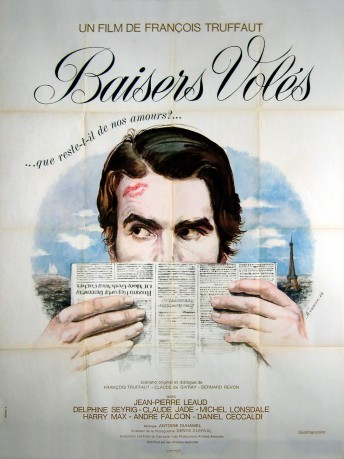
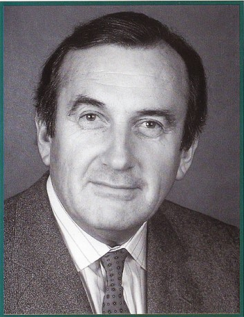

#8110 Geraubte Küsse
Alternativ: Stolen Kisses (Englischer Titel)
Auszeichnungen: für 1 Oscars nominiert
 
 IMDB-Wertung: 7.8 / 10
IMDB-Wertung: 7.8 / 10  Metascore: 0
Metascore: 0 
Antoine Doinel joined the army but has just been discharged. The film tells his reunion with Christine Darbon, the girl he was in love with before the beginning of the film, and his adventures in his jobs : first as a night watchman, then as a private investigator, especially during one investigation within Mr Tabard's shoes-shop... Mme Tabard is so fascinating...
Jahr: 1968
Dauer: 91 Minuten
FSK: 12
Land: Frankreich Studio: Europa-Filmverleih AGTonspuren:
Untertitel: Deutsch,
Auflösung: 1080p (1808x1080) Größe: 5591 MB
Genre: Drama, Komödie, Liebe
Regisseur: François Truffaut
Drehbuch: François Truffaut
Soundtrack: Antoine Duhamel
Darsteller:
 Jean-Pierre Léaud als Antoine Doinel
Jean-Pierre Léaud als Antoine Doinel- Delphine Seyrig als Fabienne Tabard
- Claude Jade als Christine Darbon
 Michael Lonsdale als Georges Tabard
Michael Lonsdale als Georges Tabard-  Daniel Ceccaldi als Lucien Darbon
- Martine Ferrière als La chef-vendeuse du magasin de chaussures
- Marie-France Pisier als Colette Tazzi (uncredited)
- Harry-Max als Monsieur Henri
- André Falcon als Monsieur Blady
- Claire Duhamel als Madame Darbon
- Catherine Lutz als Catherine
- Jacques Rispal als Monsieur Colin
- Serge Rousseau als Le type qui suit Christine
- Paul Pavel als Julien
- François Darbon als L'adjudant-chef Picard
- Albert Simono als Albani, le client de l'agence
- Jacques Delord als Robert Espannet, le prestidigitateur
- Marcel Berbert als Un homme qui ouvre sa porte
- Pascale Dauman als La Parisienne suivie dans la rue
- Jean-François Adam als Albert Tazzi (uncredited)
- Chantal Banlier als Une vendeuse du magasin de chaussures (uncredited)
- Anik Belaubre als La concierge au bordel (uncredited)
- Liza Braconnier als La prostituée triste (uncredited)
- Martine Brochard als Madame Colin (uncredited)
- Robert Cambourakis als L'amant peureux de Mme Colin (uncredited)
- Léon Elkenbaum als Le dentiste (uncredited)
- Karine Jeantet als Une vendeuse du marchand de chaussures (uncredited)
- Marcel Mercier als L'homme au garage de Darbon (uncredited)
- France Monteil als La prostituée gentille (uncredited)
- Joseph Mériau als Homme au garage de Darbon (uncredited)
- Carole Noe als La grande fille (uncredited)
- Madeleine Parard als La prostituée méchante (uncredited)
- Christine Pellé als Mademoiselle Ida (uncredited)
- Jacques Robiolles als Le chômeur de la télé (uncredited)
- Roger Trapp als Monsieur Shapiro (uncredited)
Datei: X:\1968\Geraubte Küsse (1968, FSK12, 1808x1080).mkv seit 24.01.2018
Festplatte: HD 1900-1970
 Es gibt insgesamt 25 Filme in der Gruppe '1968'
Es gibt insgesamt 25 Filme in der Gruppe '1968'